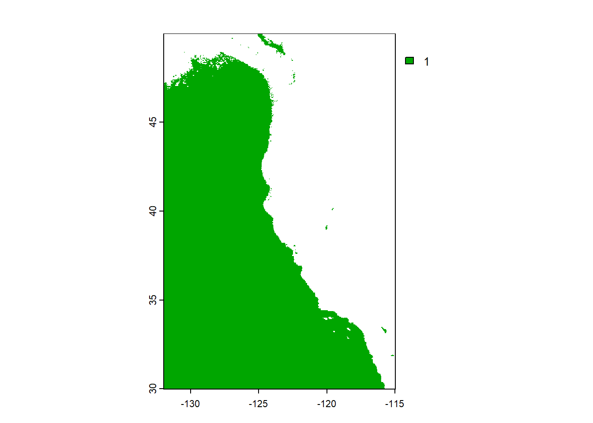
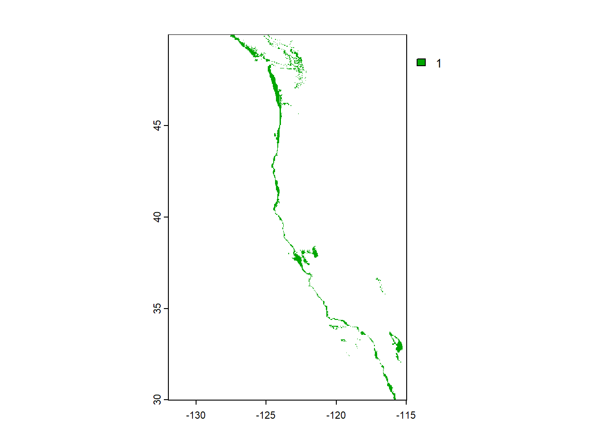
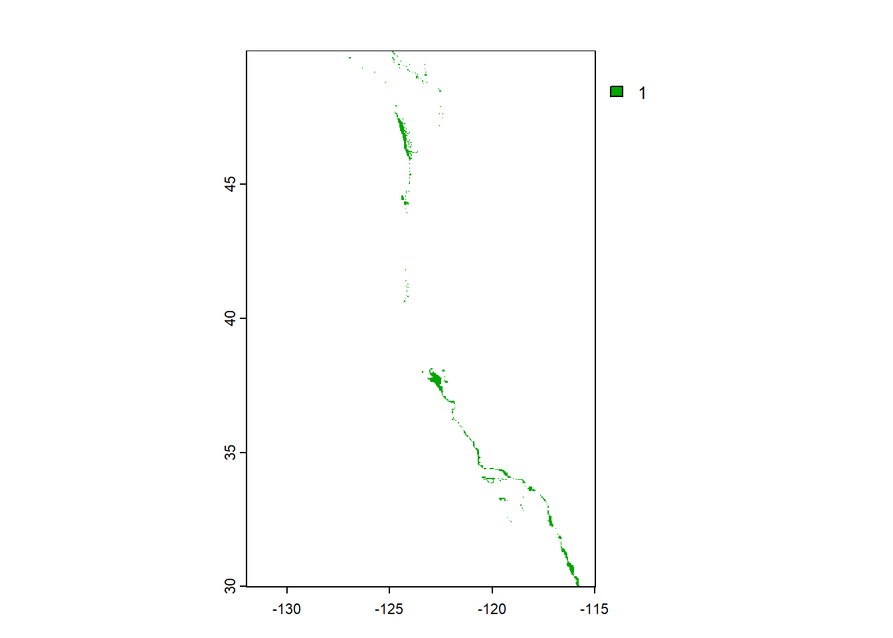
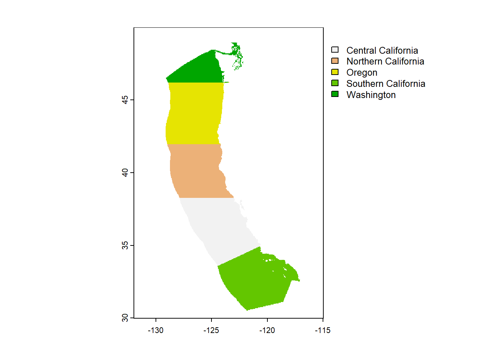
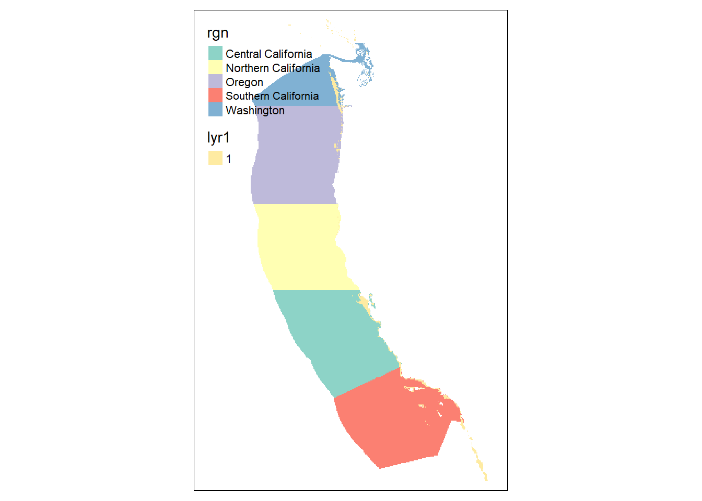

Reveal code
library(sf)
library(here)
library(terra)
library(tmap)
library(tidyverse)
library(viridisLite)
library(RColorBrewer)
library(kableExtra)
library(testthat)
library(patchwork)Prioritizing potential aquaculture
library(sf)
library(here)
library(terra)
library(tmap)
library(tidyverse)
library(viridisLite)
library(RColorBrewer)
library(kableExtra)
library(testthat)
library(patchwork)eez <- read_sf(here("data", "wc_regions_clean.shp"))
depth <- terra::rast(here("data", "depth.tif"))sst2008 <- terra::rast(here("data", "average_annual_sst_2008.tif"))
sst2009 <- terra::rast(here("data", "average_annual_sst_2009.tif"))
sst2010 <- terra::rast(here("data", "average_annual_sst_2010.tif"))
sst2011 <- terra::rast(here("data", "average_annual_sst_2011.tif"))
sst2012 <- terra::rast(here("data", "average_annual_sst_2012.tif"))
sst <- c(sst2008, sst2009, sst2010, sst2011, sst2012)# Compile all our SST rasters into one object
sst_files <- list.files(here("data"),
pattern = "average",
full.names = TRUE)# Generate an empty vector
# sst <- vector(length = length(sst_files))
# # Vector has no length so it won't fill, need to specify how long you want it to be
#
# # Fill the vector with sst files
# for (i in seq_along(sst_files)) {
# sst_file <- terra::rast(sst_files[i])
# sst[i] <- sst_file
# }# sst <- c(terra::rast(here("data", "average_annual_sst_2008.tif")),
# terra::rast(here("data", "average_annual_sst_2009.tif")),
# terra::rast(here("data", "average_annual_sst_2010.tif")),
# terra::rast(here("data", "average_annual_sst_2011.tif")),
# terra::rast(here("data", "average_annual_sst_2012.tif"))
# )if(st_crs(eez) == st_crs(depth)) {
print("Coordinate reference systems match")
} else{
warning("Updating coordinate reference systems to match")
# transform data to match
eez <- st_transform(eez, st_crs(depth))
}[1] "Coordinate reference systems match"if(st_crs(sst) == st_crs(depth)) {
print("Coordinate reference systems match")
} else{
warning("Updating coordinate reference systems to match")
# transform data to match
sst <- project(sst, crs(depth))
}[1] "Coordinate reference systems match"st_crs(eez) == st_crs(depth)[1] TRUEst_crs(sst) == st_crs(depth)[1] TRUE# st_crs(eez)
# st_crs(depth)
# st_crs(sst)Pacific rock crabs depth range 0 - 91 m
Pacific sea star depth range 0 - 30 m 24.7 - 29.3, mean 28.5
# data_list <- list(depth, sst, west_eez)
#
# for (i in 1:length(data_list)) {
# if (st_crs(data_list[[i]]) != st_crs(depth)) {
# warning("The CRS of do not match, transforming now...")
# data_list[[i]] <- terra::project(data_list[[i]], depth)
# } else {
# print(paste("The CRS match"))
# }
# }find the mean SST from 2008-2012 (e.g. create single raster of average SST) convert average SST from Kelvin to Celsius
depth <- project(depth, crs("EPSG:4326"))
sst <- project(sst, crs("EPSG:4326"))
mean_sst <- app(sst, fun = mean)
mean_sst <- mean_sst - 273.15# Crop the depth raster to match extent of sst
depth_crop <- crop(depth, mean_sst)
# Resample depth to match resolution of sst
depth_resample <- resample(depth_crop, y = mean_sst, method = "near")check that the depth and SST match in resolution, extent, and coordinate reference system hint: can the rasters be stacked?
test_stack <- c(depth_resample, mean_sst)reclassify SST and depth data into locations that are suitable for oysters hint: set suitable values to 1 and unsuitable values to 0 sea surface temperature: 11-30°C depth: 0-70 meters below sea level
# create sst reclassification matrix
rcl_sst <- matrix(c(-Inf, 11, NA,
11, 30, 1,
30, Inf, NA),
ncol = 3, byrow = TRUE)
# use reclassification matrix to reclassify sst raster
reclass_sst <- classify(mean_sst, rcl = rcl_sst)
plot(reclass_sst)
# create sst reclassification matrix
rcl_depth <- matrix(c(-Inf, -70, NA,
-70, 0, 1,
0, Inf, NA),
ncol = 3, byrow = TRUE)
# use reclassification matrix to reclassify sst raster
reclass_depth <- classify(depth_resample, rcl = rcl_depth)
plot(reclass_depth)
# change reclassified values into factors
# values(reclassified_depth) <- as.factor(values(reclassified_depth))find locations that satisfy both SST and depth conditions
sst_depth <- lapp(c(reclass_sst, reclass_depth), fun = "*")
# sst_depth <- (reclass_depth == 1) & (reclass_sst == 1)
# sst_depth <- reclass_sst * reclass_depth
plot(sst_depth)
We want to determine the total suitable area within each EEZ in order to rank zones by priority. To do so, we need to find the total area of suitable locations within each EEZ.
select suitable cells within West Coast EEZs find area of grid cells find the total suitable area within each EEZ hint: it might be helpful to rasterize the EEZ data
# Find area of suitable cells
suitable_area <- cellSize(x = sst_depth, # places where sst and depth match
mask = TRUE, # keeps NA values
unit = 'km') # Selecting km from data
# Rasterize EEZ data
eez_raster <- rasterize(eez,
suitable_area, # to this raster
field = 'rgn') # Transfer values to each eez region
# Initial plot
plot(eez_raster)
# Plot regions and suitable areas together
tm_shape(eez_raster) +
tm_raster() +
tm_shape(sst_depth) +
tm_raster()
# Use zonal algebra to sum the suitable area by region
eez_suitable <- zonal(x = suitable_area,
z = eez_raster, # Raster representing zones
fun = 'sum', # To add up total area
na.rm = TRUE)
eez_suitable rgn area
1 Central California 4069.5671
2 Northern California 178.0246
3 Oregon 1074.2562
4 Southern California 3508.1870
5 Washington 2378.2758# Print suitble area by EEZ
print(paste0("Oyster suitable area in ", eez_suitable$rgn[1], " is ", round(eez_suitable$area[1], 2), 'km'))[1] "Oyster suitable area in Central California is 4069.57km"print(paste0("Oyster suitable area in ", eez_suitable$rgn[2], " is ", round(eez_suitable$area[2], 2), 'km'))[1] "Oyster suitable area in Northern California is 178.02km"print(paste0("Oyster suitable area in ", eez_suitable$rgn[3], " is ", round(eez_suitable$area[3], 2), 'km'))[1] "Oyster suitable area in Oregon is 1074.26km"print(paste0("Oyster suitable area in ", eez_suitable$rgn[4], " is ", round(eez_suitable$area[4], 2), 'km'))[1] "Oyster suitable area in Southern California is 3508.19km"print(paste0("Oyster suitable area in ", eez_suitable$rgn[5], " is ", round(eez_suitable$area[5], 2), 'km'))[1] "Oyster suitable area in Washington is 2378.28km"Old code
# Find area of suitable cells
# area_cell <- cellSize(sst_depth, unit = "km")
#
# # Rasterize eez
# eez_raster <- rasterize(eez, sst_depth, field="rgn")
# plot(eez_raster)
#
# # Clip suitable area by eez raster??
# sst_depth_eez <- area_cell[eez_raster, drop = FALSE]
# plot(sst_depth_eez)
#
#
#
# # Crop by new raster
# sst_depth_eez <- sst_depth[eez_raster, drop = FALSE]
# test_eez <- eez_raster[sst_depth, drop = FALSE]
# plot(test_eez)
# # Mask raster
# # sst_depth <- mask(sst_depth, eez_raster)
# plot(sst_depth_eez)
# Zonal: summarize values in raster based on zones in raster
# zonal_oysters <- zonal(sst_depth_eez, eez_raster, fun = "sum", na.rm=TRUE)
# zonal_oysters
# the_answer <- sst_depth * area_cell
# the_answer
#
# zonal_answer <- zonal(the_answer, eez_raster, fun = "sum", na.rm=TRUE)
# zonal_answerMICHELLE’S CODE
# # Find the area of grid cells using cellSize
#
# suitable_area <- cellSize(x = masked_location, # Selecting suitable locations from above
# mask = TRUE, # When true, previous NA will carry over
# unit = 'km') # Selecting km from data
#
# # Initial plot
# plot(suitable_area)
# # Find the total suitable area within each EEZ
#
# # Rasterize EEZ data
# eez_raster <- rasterize(eez,
# suitable_area, # to this raster
# field = 'rgn') # Transfer values to each eez region
#
# # Initial plot
# plot(eez_raster)
#
# # Use zonal algebra to aggregate a grouping variable
# eez_suitable <- zonal(x = suitable_area,
# z = eez_raster, # Raster representing zones
# fun = 'sum', # To add up total area
# na.rm = TRUE)
#
# # Print suitble area by EEZ
# print(paste0("Oyster suitable area in ", eez_suitable$rgn[1], " is ", eez_suitable$area[1], 'km'))
# print(paste0("Oyster suitable area in ", eez_suitable$rgn[2], " is ", eez_suitable$area[2], 'km'))
# print(paste0("Oyster suitable area in ", eez_suitable$rgn[3], " is ", eez_suitable$area[3], 'km'))
# print(paste0("Oyster suitable area in ", eez_suitable$rgn[4], " is ", eez_suitable$area[4], 'km'))
# print(paste0("Oyster suitable area in ", eez_suitable$rgn[5], " is ", eez_suitable$area[5], 'km'))